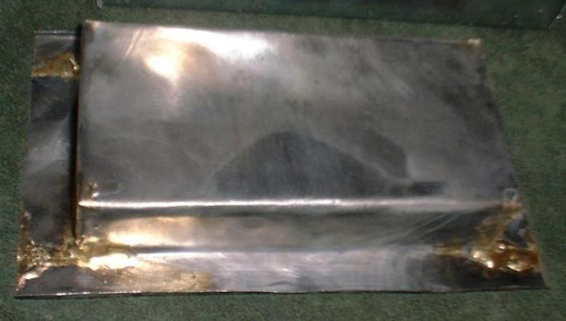

Electric Tinning Pot
Last Changed: March 13, 2003


Warning: Use of this
type of home made electric tinning pot carries risks of severe burns and
electrocution.
Parts from "All Fired Up!" http://www.kilndr.com/ :
1 soft fire brick 9" x 4.5" x 2.5"
1 square foot of 1" thick Kaowool Ceramic
Fiber Blanket
100 feet of 21ga. Thyssen Resistance Wire (0.845
ohms per foot). This is enough for 3 elements.
2 Porcelain Insulators, T-type
2 Standard Screw Connectors
3 feet of 14ga. High temperature kiln switch box
wire
Parts from McMaster-Carr http://www.mcmaster.com/ :
24" x 24" of 0.024" Type 304 Stainless Steel (2b
finish)
1 male electrical plug
100 Pack of #6 x 3/8" 18-8 stainless steel sheet
metal screws (if you don't already have some)
3' long 3/16" diameter galvanized steel rod
Clip-On Bimetal Thermometer with 1 3/4" dial, 5"
stem, and a temperature range of 200F-1000F
The pot will fit up to 8 pounds of tin which you can buy from Ney
Metals .
1) Cut the 3' long 3/16" diameter rod down so that it's
2' long.
2) 2" from one end of the rod drill a 3/64" hole through the
rod. You may need to file a small flat spot in the rod so the drill
bit doesn't slip.
3) Cut a 33' length of element wire.
4) Put the end of the rod with the 3/64" hole in a drill and
thread the end of the 21ga. element wire through the hole. Use the drill
to wind the element wire into a coil. Leave about 3" of unwound wire at
the end of the coil. Put the end of the wire that's through the hole in
the rod out and unwind 3" of wire.
5) Using a router with a 1/4" channel bit make a 9/32" deep groove
in the fire brick with the pattern included below.
6) Very carefully stretch the coil of element wire until it is 30"
long. The coil must be stretched so that all the turns of the coil are
evenly spaced.
7) Insert the coil in to the groove in the fire brick starting at the
middle bend in the groove. Where the coil makes a turn in the groove it
must be stretch out more so that none of the turns in the coil come in
contact with each other.
8) Cut out the pattern for the box.
9) Punch/drill any holes marked on the pattern, make all the bends
shown on the pattern for the box, and use the sheet metal screws to screw
it together.
10) Remove the screws from the box so that you can open it up enough
to get the fire brick inside it. The ends of the element wire need to go
through the two Porcelain Insulators Ts with the thin end of the Insulators
Ts sticking out the two 1/2" holes in the end of the box. Screw the box
back together. (Please note that in the photos of my tinning pot the thick
ends of the Insulators Ts are shown outside of the pot. I did it that way
on mine because I had planned to use an 4"x4"x2" electrical outlet box
to enclose the base wires.)
11) Cut the "Kaowool Ceramic Fiber Blanket" into two 2.75" x
9.75" and two 2.75" x 3.25" pieces which line the sides of the box
above the fire brick.
12) Cut out the pattern for the tin tray.
13) Make all the bends shown on the pattern for the box and braze the
seams so that there are water tight.
14) Cut the 3' of 14ga. high temperature kiln switch box wire into
3 one foot pieces and attach them to the electrical plug. Remember which
wire is the ground wire.
15) Use a screw with a washer to attach the other end of the ground
wire to the hole marked on the pattern as "ground wire". Use the two screw
connectors to attach the ends of the two live wires to either end of the
element wire.
16) Get a power strip with an On/Off switch. With the switch turned
OFF plug the tinning pot into the power strip and plug the power strip
into an outlet.
17) Switch on the tinning pot and check that the heating element coil
heats evenly.
18) Insert the tin tray into the pot and load it with tin. When melting
tin in the tray for the first time a propane torch can help to melt the
tin ingots.
To control the temperature of the tin you can either:
1) Build a temperature controller box with an electronic temperature controller and thermocouple probe that inserts into the tin to measure the temperature. After reaching the preset temperature the temperature controller will turn the power to the elements on and off with the use of a relay to maintain that temperature.
2) Use a high temperature thermometer to measure the temperature and
manually turn the power on and off to maintain the correct temperature.
Copyright 2003 Craig W. Nadler All rights reserved